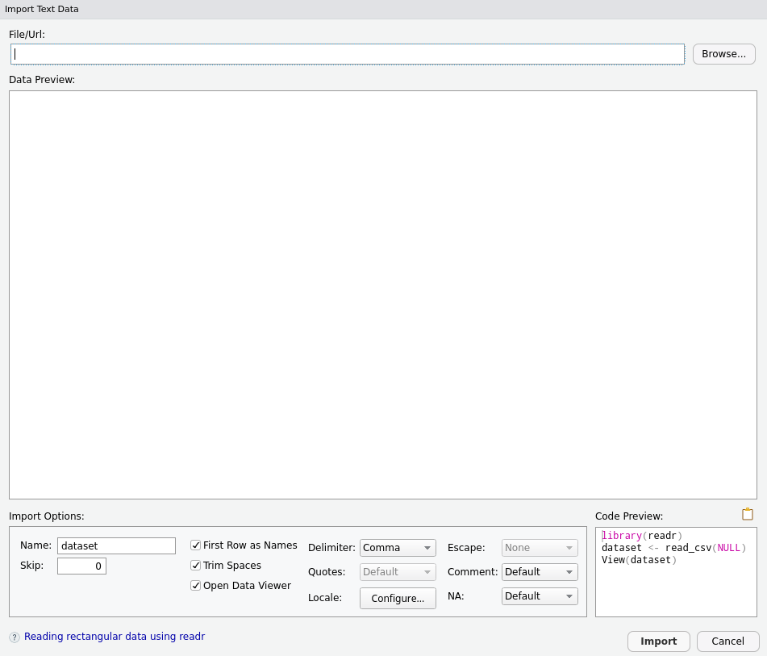
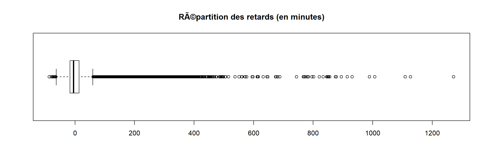

5 Importer des données externes
Ce document est extrait du cours de Julien Barnier “Introduction à R et au tidyverse” (https://juba.github.io/tidyverse)
R n’est pas prévu pour la saisie de données, mais il bénéficie de nombreuses fonctions et packages permettant l’import de données depuis un grand nombre de formats. Seuls les plus courants seront abordés ici.
5.1 Modifier le répertoire actif
La fonction getwd permet d’afficher le répertoire actif.
## [1] "C:/Users/anthony.sardellitti/Programmation_Statistique_R"Renseigner un répertoire actif permet notamment d’éviter de saisir le chemin complet d’un fichier de données tel que C:/Document/dataset/mon_fichier.txt
Pour modifier le répertoire courant, on utilise la fonction setwdtel que setwd(“C:/Users/anthony/Formations”)
On peut également faire la même opération en cliquant sur Session, puis Set Working Directory et Choose Directory.
5.2 Import de fichiers textes
Si votre fichier CSV suit un format CSV standard (c’est le cas s’il a été exporté depuis LibreOffice par exemple), avec des champs séparés par des virgules, vous pouvez utiliser la fonction read.csv en lui passant en argument le nom du fichier :
Il existe plusieurs variantes à la fonction read.csv, la différence réside dans les arguments par défaut.
Dans la même famille de fonction, chaque fonction dispose de plusieurs arguments, parmi lesquels :
fileindique le chemin d’accès au fichierheaderpermet de spécifier si la première ligne correspond aux noms des colonnessepindique par quel caractère sont séparées les colonnes (“\t” pour les tabulations)decindique par quel caractère joue le rôle de la décimale (. ou ,)row.namespermet de spécifier quel numéro de colonne peut être considéré comme le numéro d’index des lignesna.stringsest un vecteur de chaînes de caractères indiquant les valeurs devant être considérées comme manquantes. Ce vecteur vautc("", "NA")par défaut- `encoding’ permet de gérer l’encodage Il peut arriver, notamment sous Windows, que l’encodage des caractères accentués ne soit pas correct au moment de l’importation. On peut alors spécifier manuellement l’encodage avec cet argument
5.3 Interface interactive d’import de fichiers
RStudio propose une interface permettant d’importer un fichier de données de manière interactive. Pour y accéder, dans l’onglet Environment, cliquez sur le bouton Import Dataset :
L’extension readr, qui fait partie du tidyverse, permet l’importation de fichiers txt, csv, excel mais le nom des fonctions et des arguments sont différents.

Sélectionnez From Text (readr)…. Une nouvelle fenêtre s’affiche :

Il vous suffit d’indiquer le fichier à importer dans le champ File/URL tout en haut (vous pouvez même indiquer un lien vers un fichier distant via HTTP). Un aperçu s’ouvre dans la partie Data Preview et vous permet de vérifier si l’import est correct :

Vous pouvez modifier les options d’importation, changer le type des colonnes, etc. et l’aperçu se met à jour. De même, le code correspondant à l’importation du fichier avec les options sélectionnées est affiché dans la partie Code Preview.
Important : une fois que l’import semble correct, ne cliquez pas sur le bouton Import. À la place, sélectionnez le code généré et copiez-le (ou cliquez sur l’icône en forme de presse papier) et choisissez Cancel. Ensuite, collez le code dans votre script et exécutez-le (vous pouvez supprimer la ligne commençant par View).
Cette manière de faire permet “d’automatiser” l’importation des données, puisqu’à la prochaine ouverture du script vous aurez juste à exécuter le code en question, sans repasser par l’interface d’import.
5.4 Import depuis un fichier Excel
L’extension readxl, qui fait également partie du tidyverse, permet d’importer des données directement depuis un fichier au format xlsou xlsx.
Elle ne fait pas partie du “coeur” du tidyverse, il faut donc la charger explicitement avec :
On peut alors utiliser la fonction read_excel en lui spécifiant le nom du fichier :
Il est possible de spécifier la feuille et la plage de cellules que l’on souhaite importer avec les arguments sheet et range :
Comme pour l’import de fichiers texte, une interface interactive d’import de fichiers Excel est disponible dans RStudio dans l’onglet Environment. Pour y accéder, cliquez sur Import Dataset puis From Excel….

Spécifiez le chemin ou l’URL du fichier dans le premier champ, vérifiez l’import dans la partie Data Preview, modifiez si besoin les options d’importation, copiez le code d’importation généré dans la partie Code Preview et collez le dans votre script.
Pour plus d’informations, voir le site de l’extension readxl.
5.5 Export de données
5.5.1 Export de tableaux de données
On peut avoir besoin d’exporter un tableau de données dans R vers un fichier dans différents formats. La plupart des fonctions d’import disposent d’un équivalent permettant l’export de données. On citera notamment :
write.csv, permet d’enregistrer un data frame dans un fichier au format texte délimité
Il n’existe par contre pas de fonctions permettant d’enregistrer directement au format xls ou xlsx. On peut dans ce cas passer par un fichier CSV.
Ces fonctions sont utiles si on souhaite diffuser des données à quelqu’un d’autre, ou entre deux logiciels.
Si vous travaillez sur des données de grandes dimensions, les formats texte peuvent être lents à exporter et importer. Dans ce cas, l’extension feather peut être utile : elle permet d’enregistrer un data frame au format feather, qui n’est pas le plus compact mais qui est extrêmement rapide à lire et écrire 10.
Les fonctions read_feather et write_feather permettent d’importer et exporter des tableaux de données dans ce format.
5.5.2 Sauvegarder des objets
Une autre manière de sauvegarder des données est de les enregistrer au format RData. Ce format propre à R est compact, rapide, et permet d’enregistrer plusieurs objets R, quel que soit leur type, dans un même fichier.
Pour enregistrer des objets, il suffit d’utiliser la fonction save et de lui fournir la liste des objets à sauvegarder et le nom du fichier :
Pour charger des objets préalablement enregistrés, utiliser load :
Les objets ddevrait alors apparaître dans votre environnement.
Attention, quand on utilise load, les objets chargés sont importés directement dans l’environnement en cours avec leur nom d’origine. Si d’autres objets du même nom existaient déjà, ils sont écrasés sans avertissement.
5.6 Exercices
5.6.1 Sujet
Dans ce qui suit on va utiliser des jeux de données correspondant aux données de tous les vols au départ d’un des trois aéroports de New-York en 2013. La base de données est répartie en plusieurs tables. Nous allons utiliser une d’entres elles pour le moment à savoir le fichier flights.csv qui présente 336 776 vols sur 19 variables
Voici une description de cette table :
year,month,day: date du vol.dep_time,arr_time: Heures de départ et d’arrivée réelles (format HHMM ou HMM).sched_dep_time,sched_arr_time: Heures de départ et d’arrivée prévues (format HHMM ou HMM).dep_delay,arr_delay: Retards de départ et d’arrivée, en minutes. Les temps négatifs représentent des départs / arrivées précoces.carrier: Abréviation à deux lettres des compagnies aériennes.flights: Numéro de voltailnum: Immatriculation de l’avionorigine,dest: Aéroport de départ et destination.air_time: Durée du vol en minutes.distance: Distance entre les aéroports, en miles.hour,minute: Heure de départ prévue divisée en heures et minutes.time_hour: Date et heure prévues du vol

Exercice 1
Importez le jeu de données
fligths.csvCombien de lignes, colonnes sont présentes dans cette table ?
Affichez le nom des colonnes
Affichez les 10 premières lignes dans une vue
Exercice 2
Affichez un résumé des données
Affichez le type des colonnes
Transformer la variable
flighten caractèreAffichez les quartiles de la distribution de la variable
arr_delayAffichez les déciles de la distribution de la variable
distance
Exercice 3
Quel est l’aéroport avec le plus de départ en 2013 ?
Avec la fonction
unique, affichez le nombre de destinations différentesProposez une représentation graphique adaptée pour la variable
arr_delayProposez une représentation graphique adaptée pour la variable
originProposez une représentation graphique adaptée pour la variable
destMême question, mais en affichant uniquement un top 10
5.6.2 Correction
Exercice 1
- Importez le jeu de données
fligths.csv
- Combien de lignes, colonnes sont présentes dans cette table ?
## [1] 336776 19## [1] 19## [1] 336776- Affichez le nom des colonnes
## [1] "year" "month" "day" "dep_time"
## [5] "sched_dep_time" "dep_delay" "arr_time" "sched_arr_time"
## [9] "arr_delay" "carrier" "flight" "tailnum"
## [13] "origin" "dest" "air_time" "distance"
## [17] "hour" "minute" "time_hour"- Affichez les 10 premières lignes dans une vue
Exercice 2
- Affichez un résumé des données
- Affichez le type des colonnes
- Transformer la variable
flighten caractère
## [1] "character"- Affichez les quartiles de la distribution de la variable
arr_delay
## 0% 25% 50% 75% 100%
## -86 -17 -5 14 1272- Affichez les déciles de la distribution de la variable
distance
## 0% 10% 20% 30% 40% 50% 60% 70% 80% 90% 100%
## 17 214 427 544 733 872 1023 1096 1598 2446 4983Exercice 3
- Quel est l’aéroport avec le plus de départ en 2013 ?
## x
## EWR JFK LGA
## 120835 111279 104662- Avec la fonction
unique, affichez le nombre de destinations différentes
## [1] 105Si la variable dest est de type factor, on peut simplement compter le nombre de levels
## [1] TRUE## [1] 105- Proposez une représentation graphique adaptée pour la variable
arr_delay

- Proposez une représentation graphique adaptée pour la variable
origin
count <- table(flights$origin)
pie(x = count, main = "Répartition des vols depuis l'aéroport de départ",
labels = paste(row.names(count),"\n",count),col = colors())- Proposez une représentation graphique adaptée pour la variable
dest
count <- sort(x = table(flights$dest),decreasing = TRUE)
barplot(height = count, main = "Nombre de vols pour chaque destination",
las = 2, cex.names = 0.4)
- Même question, mais en affichant uniquement un top 10
count <- sort(x = table(flights$dest),decreasing = TRUE)[1:10]
barplot(height = count, main = "Nombre de vols pour chaque destination \n TOP 10",
ylim = c(0,20000), col = "blue")
featherest un format compatible avec Python, R et Julia. Pour plus d’informations, voir https://github.com/wesm/feather↩